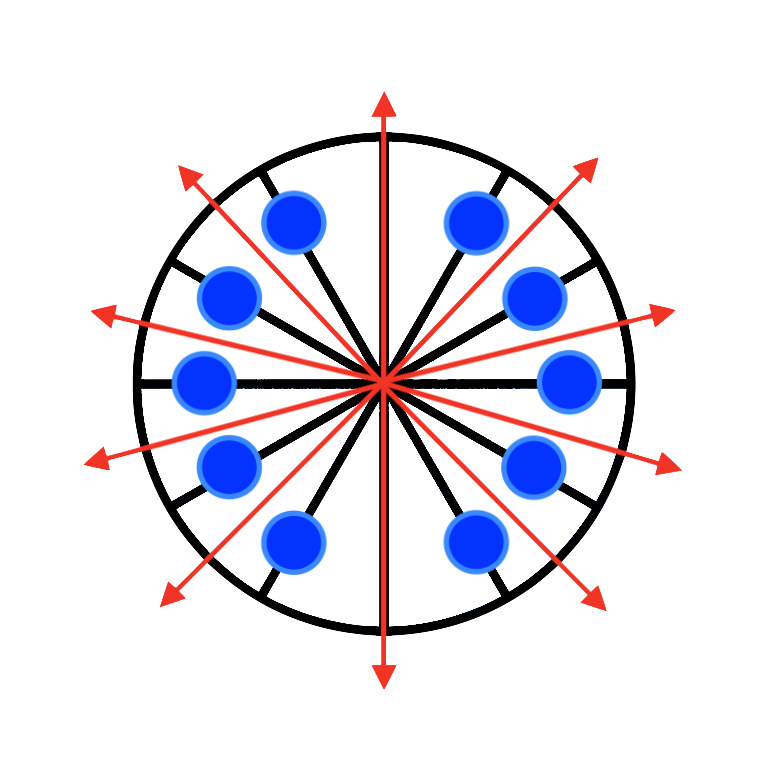
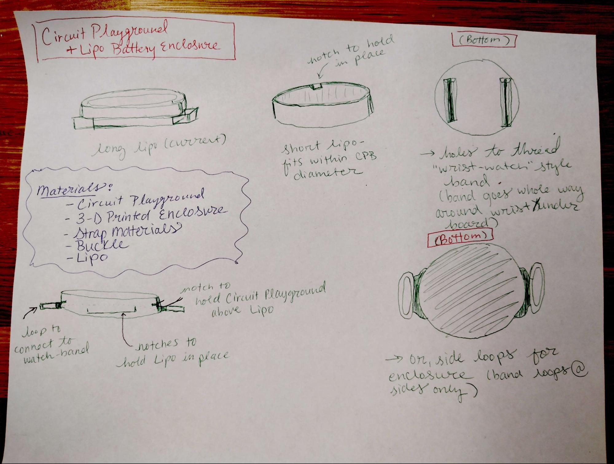
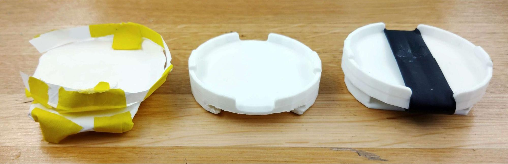
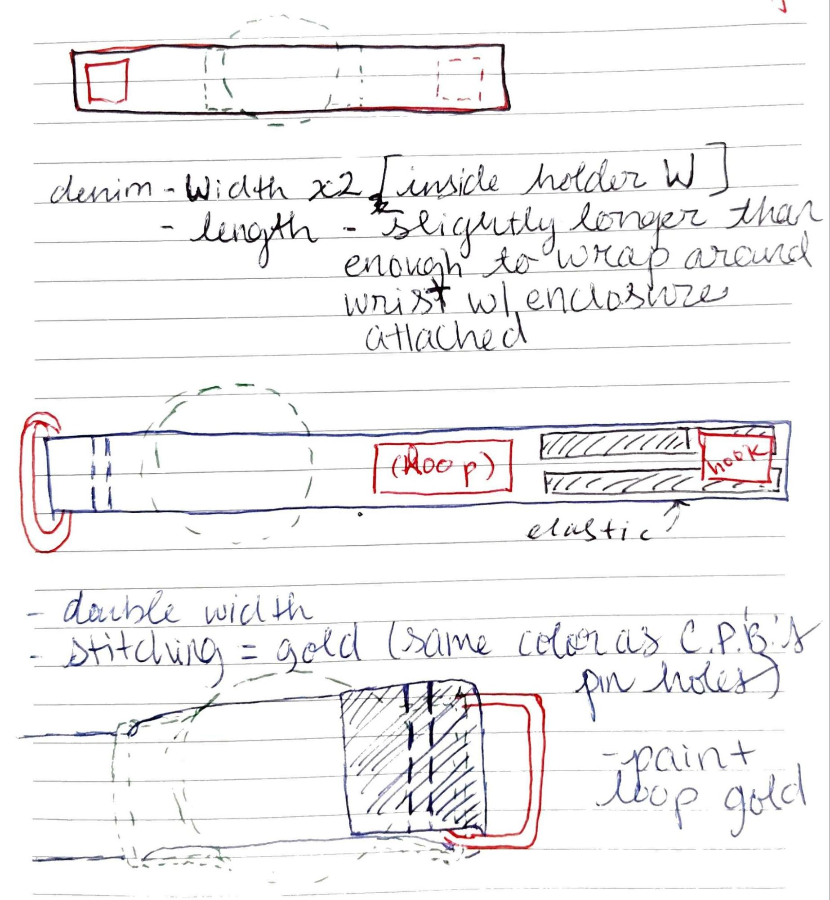

Coursework · full build journal
Pixel Chase — full build journal
How I translated a keyboard game into a wrist-worn, accelerometer-controlled LED controller—then worked through game logic, enclosure fit, battery space, and textile closure to make it an object someone could actually wear.
Start with a tiny chase game
Pixel Chase began as a p5.js browser prototype: a player moves around a circular field, catches a green target, and avoids a red chaser. The original version used keyboard controls; the wearable version needed the same state and pacing to make sense through a quick wrist gesture and a ten-pixel LED ring.
The result is deliberately small. A blue player pixel follows the orientation of the wearer’s wrist, the game rewards a catch, penalizes a collision, and an idle rainbow mode makes the controller read as wearable LED jewelry when the game is not running.
Map wrist tilt to a circle
The Circuit Playground reads X/Y acceleration values. I convert those readings into an angle, then use that angle to select one of the ring’s ten LED sectors. That translation was the core interaction problem: it had to be steady enough to feel intentional but responsive enough to feel like play.

Make the small game legible
I rebuilt the p5 prototype in Arduino/C++ and added space-aware respawning so a new target could not appear directly on the player. Modular wraparound lets movement travel continuously around the LED ring, while a red chaser, sound cues, level progression, and separate timed and survival modes give the game a clear rhythm without asking the wearer to look at a screen.
The original p5.js sketch remains a useful record of the first interaction model; the wearable version required a different input language, not just a port of the code.
Let the electronics set the form
The controller needed to carry both the Circuit Playground and a LiPo battery, which made battery volume and cable routing central design constraints. I began with hand-drawn enclosure studies and paper models, then used Blender and three successive 3D-printed iterations to work toward a wrist-sized form.

The enclosure became a collaboration
I worked with peer Anantak Singh on the final enclosure architecture. Anantak redesigned and modeled separate chambers for the Circuit Playground and LiPo, a sliding battery bay, and side bars for the watch-like strap. Across the print iterations, that arrangement made the components fit more reliably and gave the textile system a stable attachment point.

The strap is part of the interface
Bulky buckles and D-rings distracted from the compact controller, so I moved to a one-piece denim strap with a hook-and-loop closure. The single strap wraps beneath the enclosure, which keeps a fabric layer between the wearer and the electronics. Gold topstitching echoes the board’s connection pads, while white thread and closure material pick up the enclosure’s color.

What I would explore next
A more compact, verified battery configuration would reduce bulk and simplify the enclosure. I would also explore a conductive hook-and-loop closure as a deliberate power switch, and use the Circuit Playground Bluefruit’s Bluetooth capability to preserve scores beyond a single session. Those are future directions, not features of the completed prototype.
Credits and prototype boundary
This page adapts my Spring 2026 NYU Tandon Wearables course report for Professor Kathleen McDermott. The enclosure contribution is credited above to Anantak Singh. Early references included a Thingiverse enclosure model and a TechSwiss hook-and-loop watch-band tutorial.
Pixel Chase is a course prototype, not a consumer safety-tested wearable. Any future build would need an appropriate, verified power configuration and enclosure before being worn or used beyond supervised prototyping.